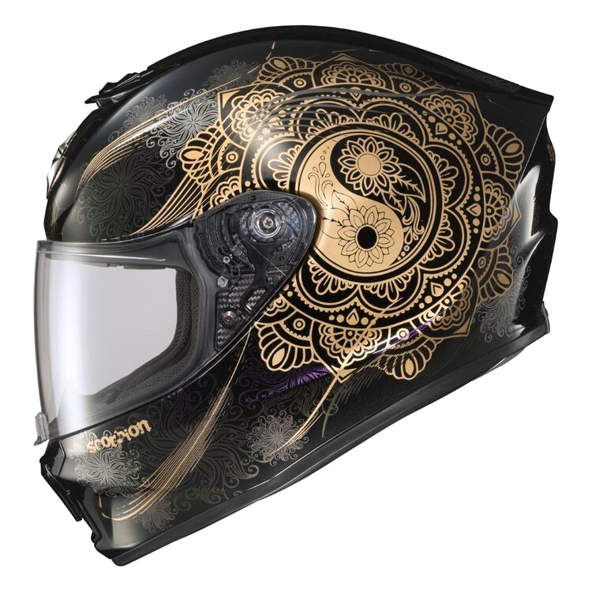

Scorpion EXO-R420 Namaskar sisak
Tiszteld az utazást. Az EXO-R420 Namaskar sisak továbbra is a Scorpion EXO teljes arcú utcai sisakjainak mércéje. A fejlett LG polikarbonát héj aerodinamikusabb és kisebb, ami ultrakönnyű, SNELL által jóváhagyott sisakot eredményez. Az aero-hangolt szellőzőrendszer nagy felső szellőzőnyílást és szájnyílásokat használ, amelyek úgy lettek kialakítva, hogy több levegőt engedjenek a versenyző fejébe, miközben alacsony zajszintet tartanak fenn. Az EXO-R420 Elliptec II arcvédővel rendelkezik, amely reteszelő pajzsreteszelő mechanizmussal rendelkezik a pajzs alsó közepén. Ez biztonságosabbá teszi az arcvédőt, és szorosabb tömítést biztosít a tömítéssel szemben. Az arcvédő könnyen eltávolítható szerszámok nélkül, az EverClear No-Fog bevonat pedig segít megőrizni a látásodat hideg és nedves környezetben. A KwikWick II bélés nedvességelvezető, antimikrobiális, gyorsan száradó, könnyen eltávolítható és mosógépben mosható.